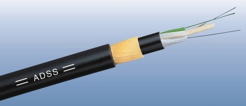
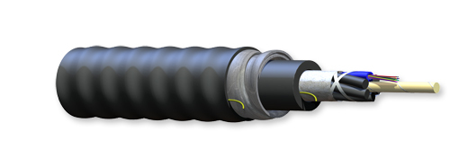
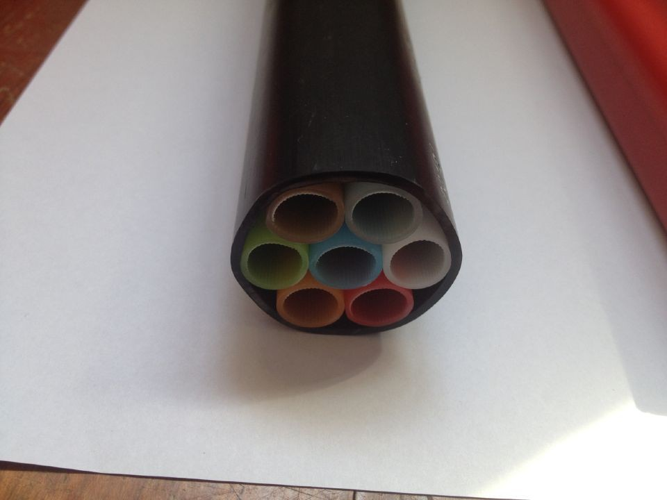
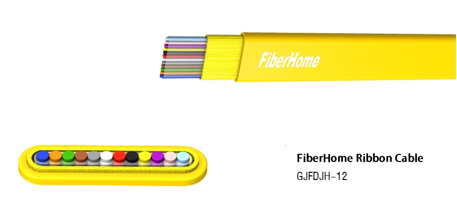
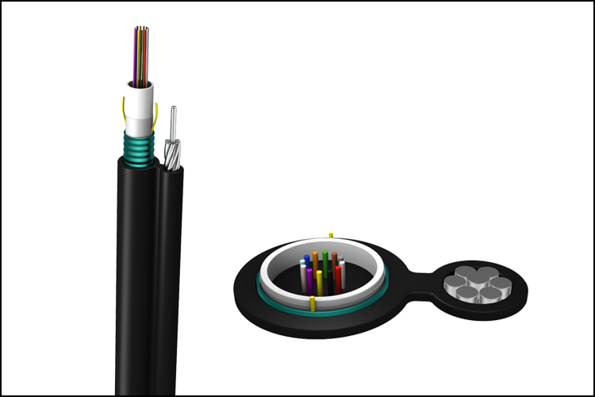

All Dielectric Self Supporting Cable (ADSS)
The cable consists of loose tubes (or some fillers) stranded around the non-metal central strength member (FRP), PE extruded as inner sheath, then an amount of Kevlar yarns applied and PE extruded as outer sheath. The loose tube is made of good temperature property material. A number of single mode fibers are secondary coated into the loose tube with suitable excess length and tube filled with moisture-proof compound. All the interstices of cable core are filled with water blocking compound.
Loose Tube Single Mode Standard Cable Non Armored (GYFTY)

The cable consists of loose tubes (or some fillers) stranded around the non-metal central strength member (FRP), PE extruded as inner sheath, then an amount of Kevlar yarns applied and PE extruded as outer sheath. The loose tube is made of good temperature property material. A number of single mode fibers are secondary coated into the loose tube with suitable excess length and tube filled with moisture-proof compound. All the interstices of cable core are filled with water blocking compound.
Single-core Indoor Cable (GJFJV-1)
The cable consists of loose tubes (or some fillers) stranded around the central strength member, outside cable core, corrugated steel tape longitudinal folded and PE extruded as outer sheath. The tube is made of good temperature property material. A number of single or multi-mode fibers are secondary coated into the loose tube with suitable excess length and tube filled with moisture-proof compound. All the interstices of cable core are filled with water blocking compound.
Air-blowing Micro Cable (GCYFTY)
The cable consists of a loose tube in the center, water swollen tape and aramid yarns as additional strength member, Then, the cable is completed with a layer of PE sheath. The tube is made of good temperature property material. A number of single or multi-mode fibers are secondary coated into the loose tube with suitable excess length and tube filled with moisture-proof compound.
Loose Tube Stranded Fiber Ribbon Cable (GY(F)DTY (S)
The cable consists of loose tubes (or some fillers) stranded around the central strength member(metal or FRP), outside cable core, corrugated steel( or aluminum) tape or non-tape longitudinal folded and PE extruded as outer sheath. The tube is made of good temperature property material. A number of single or multi-mode fibers are secondary coated into the loose tube with suitable excess length and tube filled with moisture-proof compound. All the interstices of cable core are filled with water blocking compound.
Loose Tube Stranded Figure 8 Self-Supporting Aerial Cable (GYFTC8Y & S)
As fiber ribbon cable is easy in identification, branching, and maintenance and it saves splicing time and reduces project cost, the cable is widely applied in Access networking (especially in FTTC and FTTB applications), interoffice connection and CATV networking.